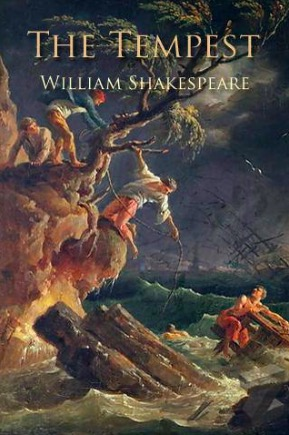
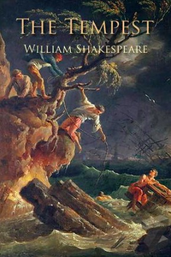

| Pericles, Prince of Tyre |
Cymbeline |
The Winter's Tale |
The Tempest  |
|---|
The late romances, often simply called the romances, are a grouping of William Shakespeare's last plays, comprising Pericles, Prince of Tyre; Cymbeline; The Winter's Tale; and The Tempest. The Two Noble Kinsmen, of which Shakespeare was co-author, is sometimes also included in the grouping. The term "romances" was first used for these late works in Edward Dowden's Shakespeare: A Critical Study of His Mind and Art (1875). Later writers have generally been content to adopt Dowden's term.
Shakespeare's plays cannot be precisely dated, but it is generally agreed that these comedies followed a series of tragedies including Othello, King Lear and Macbeth. Shakespeare wrote tragedies because they were successful at the box office, but he returned to comedy towards the end of his career, mixing it with tragic and mystical elements. Shakespeare's late romances were also influenced by the development of tragicomedy and the extreme elaboration of the courtly masque as staged by Ben Jonson and Inigo Jones. The subjects and style of these plays were also influenced by the preference of the monarch, by Shakespeare's ageing company and by their more upper class audiences.
The romances call for spectacular effects to be shown onstage, including storms at sea, opulent interior and exterior scenery, dream settings and the illusion of time passing. Scholars have argued that the late plays deal with faith and redemption, and are variations on themes of rewarding virtue over vice.
(source: Wikipedia)